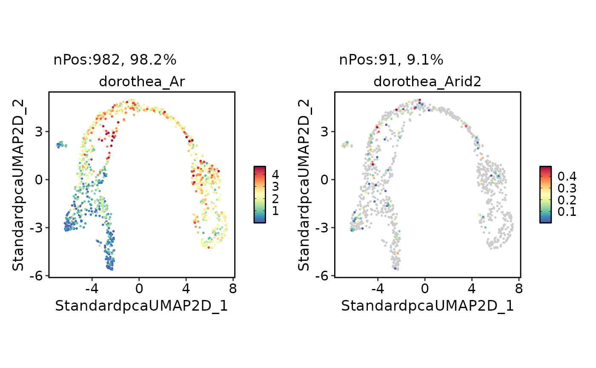

Run DoRothEA transcription factor activity inference
Usage
RunDorothea(
srt,
assay = NULL,
layer = "data",
species = c("Homo_sapiens", "Mus_musculus"),
input_species = NULL,
geneID_from_IDtype = "symbol",
geneID_to_IDtype = "symbol",
homolog_params = list(),
confidence = c("A", "B", "C"),
regulons = NULL,
method = c("ulm", "viper", "wmean"),
minsize = 5,
options = list(),
assay_name = "dorothea",
new_assay = TRUE,
add_meta = TRUE,
verbose = TRUE
)Arguments
- srt
A Seurat object.
- assay
Which assay to use. If
NULL, the default assay of the Seurat object will be used. When the object also containsChromatinAssay, the default assay and additionalChromatinAssaywill be preprocessed sequentially.- layer
Assay layer used as the expression matrix.
- species
Species used to select bundled DoRothEA regulons. DoRothEA only provides human and mouse regulons. For other input species, set
input_speciesand project expression values to this regulon species through homologous gene conversion before activity inference.- input_species
Species of the input expression features. If
NULL, the input is assumed to use the same gene namespace asspecies. When this differs fromspecies, expression features are converted with ConvertHomologs before DoRothEA activity inference.- geneID_from_IDtype, geneID_to_IDtype
Gene identifier types passed to ConvertHomologs for cross-species projection. For bundled DoRothEA regulons,
geneID_to_IDtypeshould normally remain"symbol".- homolog_params
Additional named arguments passed to ConvertHomologs when
input_speciesdiffers fromspecies, such asEnsembl_version,biomart,mirror,max_tries,multi_mapping, andcollapse_fun.- confidence
DoRothEA confidence levels to keep.
- regulons
Optional regulon table with
tf,target,mor, andconfidencecolumns. IfNULL, bundleddorothea_hsordorothea_mmdata are loaded from thedorotheapackage.- method
Activity inference backend from
decoupleR.- minsize
Minimum regulon size passed to
decoupleR.- options
Additional named options passed to the selected
decoupleRfunction.- assay_name
Name of the assay used to store TF activity scores.
- new_assay
Whether to store TF activity scores as a new assay.
- add_meta
Whether to also write TF activity scores to
srt@meta.datawith theassay_nameprefix for direct plotting withFeatureDimPlot().- verbose
Whether to print the message. Default is
TRUE.
Value
A Seurat object with DoRothEA results stored in
srt@tools[["Dorothea"]], optionally TF activity scores stored in
srt@meta.data, and optionally a TF activity assay when
new_assay = TRUE. For cross-species runs, the homolog projection summary
is stored in srt@tools[["Dorothea"]]$homolog_conversion.
References
Garcia-Alonso, L., Holland, C.H., Ibrahim, M.M., Turei, D., and Saez-Rodriguez, J. (2019). Benchmark and integration of resources for the estimation of human transcription factor activities. Genome Research, 29, 1363-1375. doi:10.1101/gr.240663.118
Badia-i-Mompel, P., Velez Santiago, J., Braunger, J., Geiss, C., Dimitrov, D., Muller-Dott, S., Taus, P., Dugourd, A., Holland, C.H., Ramirez Flores, R.O., and Saez-Rodriguez, J. (2022). decoupleR: ensemble of computational methods to infer biological activities from omics data. Bioinformatics Advances, 2, vbac016. doi:10.1093/bioadv/vbac016
Examples
data(pancreas_sub)
pancreas_sub <- standard_scop(
pancreas_sub,
verbose = FALSE
)
#> ℹ [2026-07-02 09:37:03] Skip `log1p()` because `layer = data` is not "counts"
pancreas_sub <- RunDorothea(
pancreas_sub,
layer = "counts",
species = "Mus_musculus",
confidence = c("A", "B", "C"),
method = "ulm",
minsize = 5,
new_assay = FALSE
)
#> ℹ [2026-07-02 09:37:10] Run DoRothEA/decoupleR with 12895 regulon edges
#> ℹ [2026-07-02 09:37:21] DoRothEA TF activity scores stored in <Seurat> metadata
pancreas_sub@tools$Dorothea$regulon_summary
#> n_tfs n_targets n_edges confidence
#> 1 273 5130 12895 A,B,C
head(pancreas_sub@tools$Dorothea$result)
#> statistic source condition score p_value
#> 1 ulm Ar AAACCTGAGCCTTGAT 1.9230738 0.0544885134
#> 2 ulm Ar AAACCTGGTAAGTGGC 3.8375556 0.0001247429
#> 3 ulm Ar AAACGGGAGATATGGT 2.3175899 0.0204841737
#> 4 ulm Ar AAACGGGCAAAGAATC 0.9565534 0.3388071679
#> 5 ulm Ar AAACGGGGTACAGTTC 0.6864447 0.4924426684
#> 6 ulm Ar AAACGGGTCAGCTCTC 1.0246312 0.3055527415
activity_cols <- head(
grep("^dorothea_", colnames(pancreas_sub@meta.data), value = TRUE),
2
)
head(pancreas_sub@meta.data[, activity_cols, drop = FALSE])
#> dorothea_Ar dorothea_Arid2
#> AAACCTGAGCCTTGAT 1.9230738 -0.5482112
#> AAACCTGGTAAGTGGC 3.8375556 -0.2029179
#> AAACGGGAGATATGGT 2.3175899 -0.1763966
#> AAACGGGCAAAGAATC 0.9565534 -0.5784380
#> AAACGGGGTACAGTTC 0.6864447 -0.2284842
#> AAACGGGTCAGCTCTC 1.0246312 -0.6278209
FeatureDimPlot(
pancreas_sub,
features = activity_cols,
reduction = "StandardUMAP2D",
ncol = 2
)
